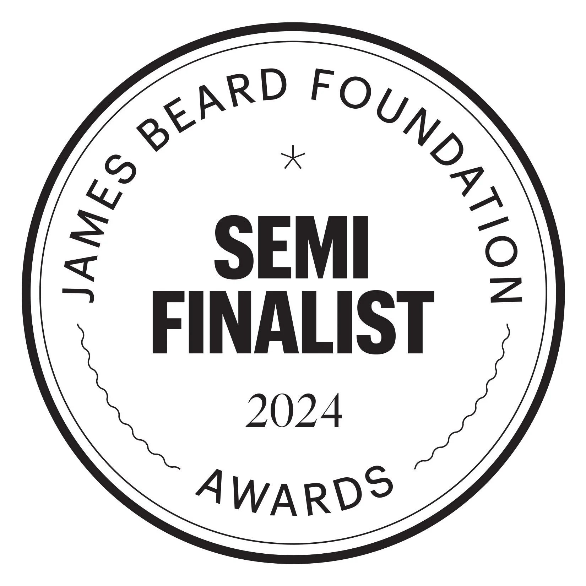

<!doctype html>
<html lang="en">
  <head>
    <meta charset="UTF-8" />
    <meta name="viewport" content="width=device-width, initial-scale-1.0" />
    <link rel="stylesheet" href="style.css" />

    <title>Brasserie Porte Rouge: Main </Main></title>
  </head>
</html>

<body style="background-color: rgb(3, 6, 3)">
  <header position="sticky">
    
    <!-- Company logo  -->
    <nav>
      <a href="index.html">Home</a>
      <a href="FoodMenu.html">Menu</a>
      <a href="WalkersMessage.html">About BPR</a>
    </nav>
    
  </header>

  <main>
    
    <h1
      style="
        text-align: center;
        color: white;
        font-family: sans-serif, Arial, Helvetica;
        font-size: 24px;
      "
    >
      A message about our menu from our head chef, and James Beard Award
      semi-finalist, Chef Walker Hunter:
    </h1>
    <h2
      style="
      width: 575px;
        border: 1px solid rgb(129, 129, 129);
        font-style: oblique;
        text-align: center;
        color: white;
        font-family: sans-serif, Arial, Helvetica;
        padding: 20px;
        font-weight: 100;
      "
    >
      I'm proud and excited to announce Porte Rouge's 2025 spring and summer
      menu. This year we've focused on capturing this curious moment in
      Missoula's culinary history, looking both backwards and forwards,
      interpreting our place in geography and culture through our chosen lens of
      French cooking. We have a quail dish celebrating indigenous ingredients, a
      marinated bison on a flatbread bed, and a throwback to the halcyon 90s
      with a cedar plank trout. Still present are some of our self-amused takes
      on classic fare: foie gras torchon inspired by a Chicago dog, a tomato &
      plum salad with black licorice syrup. The menu as a whole has pushed us to
      consider where we as cooks and Missoulians are at this moment. And this
      moment is, if I may digress, challenging. I believe that, viewed in the
      most generous terms, restaurants are one of the few examples of necessity
      intertwined with art. If we don't eat, we die; however, what we eat, and
      what restaurants flourish, define culture in a way that few other ventures
      can. Chain restaurants and cafes by committee can't do this. When the
      aliens scavenge our archives, they may find it useful to know that there
      are X many Chick-fil-A's in the United States, but this will tell them
      very little about Missoula, Montana or the people who love it. The
      independent restaurants of America, no strangers to challenge, have
      weathered a hard five years and new challenges arise daily, but we remain
      grateful to our customers, our fellow Montanans, and our visiting guests,
      who allow us to meet these challenges, serve this food and tell these
      stories. We are ever mindful of how precious our guests' resources are,
      both financial and time, and honored when they choose to spend them with
      us.<br />
      ~Chef Walker Hunter
    </h2>
  </main>

<footer>
    <p class="footer-text" style="color: white;">2022 Brasserie Porte Rouge. All rights reserved.</p>
</footer>
</body>
